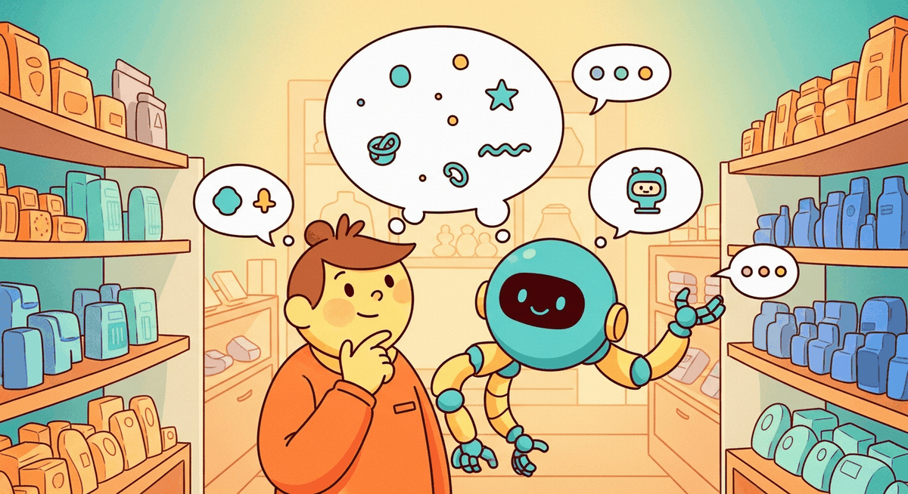
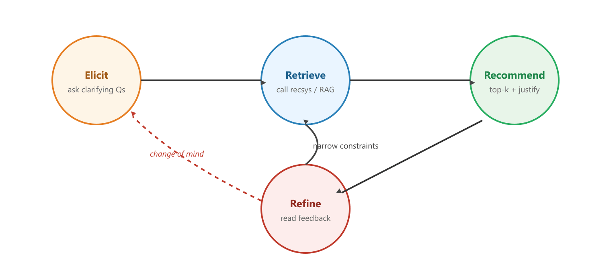

"A good waiter does not bring the wine list first. A good waiter asks what the table is celebrating."
Pixel, Curious Librarian Agent
Entry point (C) wraps the whole recsys pipeline in a dialogue. Instead of inferring the user's profile from a year of clicks, a conversational recsys elicits preferences turn by turn. Instead of returning a silent ranked list, it explains each recommendation. Instead of failing silently on ambiguity, it asks a clarifying question. This section covers the dialogue patterns that make conversational recsys work, the justification idiom that turns recommendations into explanations, and a minimal LangGraph-style loop that ties query understanding, retrieval, and ranking into a single chat surface.
Why this lives in an LLM and Agents book. A conversational recsys is just an LLM agent whose tools are the candidate generator, the ranker, and the catalog itself. The dialogue policy is a small reasoning loop driven by the conversational AI patterns from earlier in Part VIII; retrieval is the same retrieval-augmented machinery from Part VII; and the justifications are grounded in the same prompt-engineering discipline used throughout the book.
Classical recsys is the waiter who silently brings you whatever you ordered last Tuesday, refuses to explain why, and looks hurt when you ask for a menu. Conversational recsys is the waiter who actually says "you usually like the bold reds, but you mentioned a light dinner tonight, so perhaps a pinot?" One feels like surveillance, the other feels like service, and the only architectural difference is that the second one bothers to speak. Three turns of dialogue can carry more preference signal than three months of clicks, mostly because users will happily tell you their mood, but they will rarely click a button labeled "I am feeling melancholy and want subtitles."
Prerequisites
This section assumes the reader has finished Section 38.1 (the four LLM entry points into recsys) and Section 38.2 (LLM-based query understanding). The minimal LangGraph loop builds on the agent loop from the agentic AI part; the conversational-AI dialogue idioms come from earlier chapters in Part VIII.

38.4.1 Elicitation vs Inference
Traditional recsys infers preferences from behavior. A user who watched three thrillers gets ranked-higher thrillers tomorrow. The inference is statistical, opaque, and slow: the system needs weeks of clicks before it has a confident profile, and the profile updates lag the user's mood. The cold-start problem is the extreme case of this lag: a brand-new user has no history at all.
Conversational recsys flips the script. The system asks. "What kind of mood are you in?" "Older or newer?" "Subtitles okay?" Three turns of dialogue produce a richer preference signal than weeks of click logs, because the user can speak in terms (mood, occasion, constraints) that are impossible to infer from clicks alone. The dialogue elicitation pattern is especially powerful for occasional-use catalogs (movies you watch once a month, restaurants you visit twice a year) where the inference signal is thin even after years of use.
The pure-inference and pure-elicitation extremes are both wrong in practice. Production conversational recsys blends them. The system carries a long-term profile (from inference) into every conversation as a seed, then uses elicitation to refresh and override the profile for the current ask. The waiter analogy from the epigraph applies: a good waiter remembers the regulars' usual order (inference) but still asks what the table is celebrating tonight (elicitation).
38.4.2 The Turn-Taking Pattern
Figure 38.4.1 shows the canonical four-state loop for a conversational recommender. The states are Elicit, Retrieve, Recommend, and Refine. The user can re-enter the Elicit state at any point by changing their mind, refining a constraint, or rejecting all current candidates.

Each state has its own job. Elicit gathers preferences. The first question is broad ("what are you in the mood for?"); subsequent questions narrow when uncertainty in the implied retrieval set is high. Retrieve calls the recsys pipeline from Sections 38.2 and 38.3 with the current preference profile as the query. Recommend writes a small ranked list (typically 3 to 5 items, not 50) plus a one-sentence justification per item, grounded in the conversation. Refine reads the user's feedback ("the second one looks good, but cheaper please") and decides which state to return to.
38.4.3 Clarifying Questions
The hardest part of the loop is knowing when to ask a clarifying question instead of pushing on. Asking too often (a question per turn) frustrates the user. Asking too rarely produces bad recommendations the user then has to reject manually. The signal that drives the decision is uncertainty over the implied retrieval set.
A simple heuristic that works well: run the retrieval with the current profile. If the top-20 candidates span more than three distinct categories or more than a 4x price range, ask a clarifying question that targets the biggest source of dispersion. If they cluster tightly, just present them. The clarifying-question generator is yet another LLM call, prompted with the dispersed candidate set and asked to phrase the question whose answer would most reduce the dispersion.
from openai import OpenAI
import json
client = OpenAI()
CLARIFY_SYSTEM = """You write ONE short clarifying question for a recommender.
You see the user's conversation so far and the categories of the top-20 candidates.
If the candidates span many categories, ask the question that best partitions them.
Examples of partitioning dimensions: occasion, price range, length, language,
indoor/outdoor, beginner/expert, mood.
Return STRICT JSON: {"question": "...", "partition_dim": "..."}."""
def clarify(conversation: list[dict], top_categories: list[str]) -> dict:
user = (
"Conversation so far:\n" + json.dumps(conversation, indent=2)
+ "\nCategories of top-20 candidates:\n" + ", ".join(top_categories)
)
resp = client.chat.completions.create(
model="gpt-4o-mini",
messages=[
{"role": "system", "content": CLARIFY_SYSTEM},
{"role": "user", "content": user},
],
response_format={"type": "json_object"},
temperature=0.4,
)
return json.loads(resp.choices[0].message.content)
Code Fragment 38.4.1b: A clarifying-question generator. The retrieval categories are passed in so the LLM can choose the partition dimension that most reduces dispersion. Temperature is slightly higher than zero so a stuck conversation gets a fresh phrasing on retry.
A model that loves asking clarifying questions will turn the conversation into a 20-questions game. Users will leave. Cap the elicitation phase at two or three clarifying questions per session, after which the system commits to a best-effort recommendation set and lets the user refine through the Refine state. A counter in the session state plus a hard "no more questions, recommend now" branch in the policy prevents the trap.
38.4.4 Justified Recommendations
Conversational surfaces make justification a first-class feature. A traditional widget-based recsys returns a list; the user must read the list and infer why each item is there. A conversational recsys writes a sentence per item. The sentence is grounded in the conversation: it cites the user's stated preferences and the item's relevant attributes. The result is both more trustworthy (the user can spot bad reasoning) and more clickable (the user is given a reason to try a non-obvious item).
from openai import OpenAI
import json
client = OpenAI()
JUSTIFY_SYSTEM = """For each of N candidate items, write ONE sentence (max 25 words)
that justifies the recommendation. Ground the sentence in the user's stated
preferences AND in the item's enriched description. Do not invent attributes.
If a stated preference contradicts an item, return the empty string for that item
(the caller will drop it).
Return STRICT JSON: {"justifications": ["...", "...", ...]} in the same order as input."""
def justify(user_preferences: dict, items: list[dict]) -> list[str]:
user = (
"User preferences:\n" + json.dumps(user_preferences, indent=2)
+ "\n\nCandidate items:\n"
+ "\n---\n".join(f"{i}. {it['title']}: {it['enriched_text']}" for i, it in enumerate(items))
)
resp = client.chat.completions.create(
model="gpt-4o-mini",
messages=[
{"role": "system", "content": JUSTIFY_SYSTEM},
{"role": "user", "content": user},
],
response_format={"type": "json_object"},
temperature=0.4,
)
return json.loads(resp.choices[0].message.content)["justifications"]
Code Fragment 38.4.2: The justification step. Each item gets a single sentence that cites the user's stated preferences and the item's enriched description. The "return empty string for contradictory items" branch is critical: it lets the justification step act as a final safety filter against bad upstream retrievals.
To make the four states concrete, here is a single complete turn of a chat-driven movie recommender, transcribed from the lab in the chapter index.
User: "Something light to watch tonight, not too long, no horror."
Elicit (slot fill). The LLM extracts {mood: "light", max_runtime_min: 120, exclude_genres: ["horror"]} and appends it to the session profile.
Retrieve. The candidate generator returns 20 movies whose enriched embeddings match the mood vector and whose metadata satisfies the runtime and genre filters. The top 20 span 6 categories (rom-com, comedy-drama, family animation, feel-good documentary, musical, light sci-fi), so the dispersion check fires.
Clarify. Because 6 categories exceeds the threshold of 3, the clarifier from Code Fragment 38.4.1 picks the partition dimension with the highest information gain: "Live-action or animated tonight?" The user answers "live-action"; the elicit step adds {format: "live-action"}, dropping the candidate set to 12 movies across 3 categories.
Recommend with justification. The justify step from Code Fragment 38.4.2 turns the top 3 into the assistant's reply:
- "Paddington 2 (104 min): a gentle live-action comedy that lands squarely in your 'light' mood without leaning on horror tropes."
- "The Grand Budapest Hotel (99 min): comedy-drama with a fast pace and a runtime well under your limit; the warmth fits the 'light' brief."
- "About Time (123 min): just over your runtime hint, but the feel-good arc matches the mood you described, so worth flagging."
The third justification respects the user's stated constraint by surfacing the violation rather than hiding it, a discipline that builds trust over a session. The Refine state now waits for the user's next message ("the second one, but in Spanish-subtitled") and the loop closes.
38.4.5 A Minimal Conversational Recsys Loop
The four states in Figure 38.4.1 wire together into the loop below. The loop is intentionally written without a framework so the moving parts are visible. The same shape can be expressed with LangGraph nodes (one node per state) or with a state machine library, with no change to the underlying logic.
from dataclasses import dataclass, field
from openai import OpenAI
import json
client = OpenAI()
@dataclass
class Session:
history: list = field(default_factory=list) # list of {role, content}
preferences: dict = field(default_factory=dict) # accumulated slot fill
clarify_count: int = 0
last_candidates: list = field(default_factory=list)
def elicit(session: Session, user_msg: str):
"""Update preferences from the user's latest message via slot filling."""
# Reuses the slot-filler from Code Fragment 38.2.3 (Section 38.2.3)
new_slots = fill_slots(user_msg)
for k, v in new_slots.items():
if v is not None:
session.preferences[k] = v
session.history.append({"role": "user", "content": user_msg})
def retrieve(session: Session, k: int = 20) -> list[dict]:
"""Call the recsys with the current preferences and return top-k candidates."""
# Reuses the recsys_search helper that wraps retrieve + rerank
return recsys_search(preferences=session.preferences, k=k)
def should_clarify(candidates: list[dict]) -> bool:
cats = {c["category"] for c in candidates[:20]}
return len(cats) > 3 # high dispersion
def step(session: Session, user_msg: str) -> dict:
elicit(session, user_msg)
candidates = retrieve(session, k=20)
session.last_candidates = candidates
if should_clarify(candidates) and session.clarify_count < 2:
session.clarify_count += 1
# Reuses the clarify helper from Code Fragment 38.4.1
cats = [c["category"] for c in candidates[:20]]
q = clarify(session.history, cats)["question"]
session.history.append({"role": "assistant", "content": q})
return {"type": "question", "text": q}
top = candidates[:5]
# Reuses the justify helper from Code Fragment 38.4.2
justs = justify(session.preferences, top)
payload = [{"item": it, "why": j} for it, j in zip(top, justs) if j]
session.history.append({"role": "assistant",
"content": json.dumps([p["item"]["title"] for p in payload])})
return {"type": "recommendations", "items": payload}
# Driver
s = Session()
while True:
user = input("You: ")
if not user.strip():
break
out = step(s, user)
if out["type"] == "question":
print(f"Assistant: {out['text']}")
else:
for r in out["items"]:
print(f" - {r['item']['title']}: {r['why']}")
Code Fragment 38.4.3: A minimal conversational recsys loop. The four states of Figure 38.4.1 are visible as the four functions elicit, retrieve, should_clarify, and the inline recommendation step. The Session dataclass holds the long-running state, including the clarification-question budget that prevents the twenty-questions trap.
LangGraph (v0.2+, 2024 to 2026) is the natural framework for this loop because each of the four states maps to a node and the edges carry the routing logic. The hand-written loop above turns into four nodes (elicit, retrieve, recommend, refine) plus three conditional edges. The win is observability: LangGraph ships a transcript view that shows which node fired on each turn, which dramatically shortens debugging when the loop misbehaves.
38.4.6 The Warm-Conversation UX
A widget-based recsys feels mechanical. Filter chips, dropdowns, sort orders: each is a small adjustment that produces a new list. A conversational recsys feels different because the system remembers the previous turn. "Show me something similar but cheaper" is a natural sentence in a chat surface and almost impossible to express through widgets. The chat surface trades discoverability (widgets show all the dimensions available) for fluency (the user can refine without learning the dimension names).
Three patterns make the warm-conversation UX work. First, the assistant remembers the previous candidate set; "the second one" should resolve to the actual item without forcing the user to retype its name. Second, the assistant acknowledges the user's refinement before producing the new list ("got it, similar genre but under $20 instead"). Third, the assistant volunteers complementary dimensions the user did not name ("these are all paperback; want me to mix in some Kindle editions?"). All three are short LLM-driven additions to the response template; none requires a new pipeline component.
The session-state and turn-tracking machinery in this section reuses the memory and persona infrastructure from Chapter 37. Specifically, the long-term preference profile that seeds each new conversation lives in the same vector-memory store the lab in Chapter 37 builds. The voice-first variant of this loop, with the additional latency and turn-taking constraints, lives in Chapter 39.
38.4.7 When Conversational Recsys Is Wrong
Conversational recsys is not the right interface for every product. Three situations argue for the classical widget grid instead. First, when the user already knows what they want, a search box plus filters is faster than a conversation. Second, when the catalog is small and the dimensions are few (a dozen items, two attributes), the conversation is overhead. Third, when the user is browsing for serendipity rather than for a specific outcome, an infinite-scroll feed beats a dialogue that keeps asking what they want.
The hybrid pattern most production systems converge on: ship the widget grid as the default, offer a "chat with the assistant" button for users who cannot find what they want, and quietly use the LLM enrichment pipeline (Section 38.3) to lift the quality of the grid even when the user never opens the chat. The chat is a relief valve, not the only door.
Conversational recsys turns a recommender from a one-shot ranker into a four-state loop: elicit preferences, retrieve candidates, recommend with justifications, refine on feedback. The dialogue surface buys the system three things classical recsys cannot easily produce: rich preference signals on cold-start users, justifications that raise the click-through on non-obvious items, and the ability to ask a clarifying question when the candidate set is too dispersed. Cap clarifying questions at two or three per session to avoid the twenty-questions trap.
Objective. Implement the elicit-recommend-refine loop end to end on a small movie catalog, with hard caps on clarifying questions and grounded justifications.
Task. Use a public catalog of 200 to 500 movies (e.g., a MovieLens subset) embedded with sentence-transformers/all-MiniLM-L6-v2 into a small ChromaDB collection. Build a 3-turn dialog policy:
- Turn 1 (Elicit). Greet the user and ask one open-ended preference question. Accept the answer.
- Turn 2 (Clarify-or-Recommend). If the LLM judges the preference signal too sparse, ask exactly one clarifying question (genre, mood, era). Otherwise proceed to recommend.
- Turn 3 (Recommend with Justification). Retrieve top-20 from the index using the running conversation summary as the query, rerank with the LLM to top-3, and emit each pick with a one-sentence justification grounded in the catalog metadata only.
Hint. Cap clarifying questions at one to avoid the twenty-questions trap (Section 38.4.6). Each justification must cite a field present in the retrieved record. Reject any justification that mentions a movie not in the top-20.
Expected outcome. A working chat loop plus a small adversarial test set: five conversations where the user says only one word ("comedy", "scary", "old"), and the system still produces three grounded recommendations without hallucinating titles.
Stretch. Add a fourth turn where the user gives thumbs-down on one pick. Re-retrieve with the diversified query and confirm the second round does not return the rejected item.
What Comes Next
Entry points (A), (B), and (C) augment a classical recsys pipeline. The next section, Section 38.5: Generative Recsys, takes entry point (D), the most radical of the four. The classical pipeline retrieves from a fixed catalog index. Generative recsys replaces the retrieval index with a sequence-to-sequence model that emits the next item as a sequence of learned semantic ID tokens. TIGER, LLaRA, and P5 are the three lines of work the section walks through.